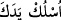
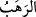
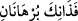
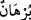
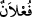
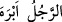
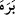
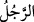
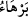

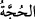
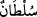
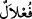
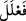
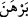
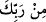
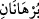

zaman da kendine çeker.
Buna göre âyetin “kanadını kendine çek” kısmı, “
elini koynuna sok” emrinin
bir tekrarı değil; bir önceki âyette geçen
“
Çünkü sen emniyette olanlardansın ifâdesini tamamlayan bir unsuru
olmuş olur. “__WORD__; üzüntü ve sızlanma ile korkmak, demektir. Yani, senin başına bir
korku ârız olsa, zorluklara tahammül etmek yahut nefsine hâkim olmak için böyle yap,
demektir. “__WORD__ “İşte bu ikisi” asâ ve el, “iki kesin delil” ve apaçık parlak iki
mûcizedir, burhandır.
“__WORD__ (delil)” kelimesi “__WORD__ veznindedir. Arapların “
Adam delil ve huccet
getirdi” sözünden alınmıştır. Yahud da “
(Adam beyazlaştı)” sözünden gelir.
Beyaz ve parlak kadına “__WORD__ ve “__WORD__ denilir. Bu kelimenin bir benzeri de “__WORD__ için
kullanılan “__WORD__ kelimesidir. Bu kelime, zeytin yağı mânâsına gelen “__WORD__den alınmış,
aydınlatma özelliğinden dolayı “huccet” için isim olarak kullanılmıştır. Zayıf bir görüşe
göre de
kelimesi,
veznindedir. Yâni
kalıbında olup Arapların “
delil
getirdi” sözünden alınmış ve isim olarak kullanılmıştır.
“
Rabbinden...” ifâdesi, “__WORD__ kelimesinin sıfatıdır. Yani, Allah Teâlâ’dan
“Firavun ve onun adamlarına” ulaşan, demektir. Buna göre âyetin anlamı şu şekilde
olur: “İşte bu ikisi Allah tarafından ortaya konulan ve Firavun ve onun adamlarına
ulaşan iki kesin delildir.”
“Çünkü onlar, yoldan çıkan” zulüm ve düşmanlıkla haddi aşan “bir kavim
olmuşlardır” (diye seslenildi).” Bu yüzden bu iki mûcîze ile kendilerine elçi ve
peygamber göndermemizi hak etmişlerdir.
Müslim, Fiten, 82; Müsned, II, 417.
Aclûnî, I, 412.